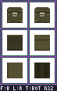

How to paint a sheet
Step ① gives every sprite a sheet: six pictures of the object, one per side. Most of the time they're fine as they are. When a side needs a fix the program can't guess (a handle, a hole, a thicker blade, a detail on the back), open the sheet in your own art program, paint, save, and step ② builds the model from what you painted.
- 1 · What's on a sheet
- 2 · Which way each side faces
- 3 · Sides must agree
- 4 · Front box = the front part
- 5 · The rules
- 6 · Tips per art program
- 7 · Checking your work
1What's on a sheet

★ FRONT BACK LEFT RIGHT TOP BOTTOM28 - chest__32_F_box.png, shown 4× bigger.
N16), which is why this guide exists.__32_F_box). Keep it when you save.2Which way each side faces
Every box shows its side as seen from outside the object, and nothing is ever upside down. Left and Right are named as if you're looking at the object's front, like a drawing of a character: Right is your right.
A handy check: whatever is on the Front's right is also on the right in Top and Bottom.
3Sides must agree
The model is only solid where all the boxes that can see a spot agree it's there. Paint that the other sides don't back up gets cut off. You're free to change the shape, but change it on every side that shows that size.
Example: a plank drawn from the front, 2 pixels thick, that you want 4 pixels thick. Its thickness shows in four boxes: Top and Bottom (as height) and Left and Right (as width).
✖ Only Top made thicker
Right only allows 2 pixels of thickness, so the extra rows on Top are cut off (red).
✔ All four made thicker
Every side that shows the thickness agrees, so nothing is cut off. The Front box doesn't change: it doesn't show thickness.
4Front box = the shape of the front part
Opposite boxes don't have to match. The Front box sets the outline of the object's front half, and the Back box the outline of its back half. The same goes for Left / Right and Top / Bottom. That's how one sheet can make a fish with a wide head and a tall tail, or a chair with a high back.
- Where the halves meet is the Split setting in ② (0.5 = halfway). Blend makes the change a sudden step, a few terraces, or a slope.
- Holes that stop partway: erase a patch in the Top box only, and it's cut down to the ↕ split, not all the way through. Mugs, buckets, bowls and cockpits work this way; Split ↕ sets how deep.
- Holes all the way through (a ring, a window) are erased in both opposite boxes.
- Looking straight at the finished model's front, you see both halves together, so it can look a little different from the Front box alone.
5The rules
Don't resize or crop
The picture's size tells the program the box size, so it must stay exactly as it was: no resize, crop, trim or canvas change. Zoom in your art program as much as you like; that doesn't change the file.
Keep the file name
The part after the double underscore (__32_F_box) holds the settings. Save over the same file. A renamed sheet still loads, but its side and shape become guesses you have to fix in ②.
Solid or see-through, nothing in between
A pixel counts as solid at 50% opacity or more; fainter pixels count as empty. Soft brushes and anti-aliased edges give half-faded pixels that end up as cut-off fuzz, so use hard 1-pixel tools.
The frame is safe
Painting on the frame or the text strip does nothing. You can also change the frame colours in ① if they bother you; any colour works.
Save as PNG with transparency
Not JPG (which smudges colours and loses transparency), and not with a filled background.
Keep the boxes in their places
Don't move or swap boxes. Each box is found by its position, and its edge touching the Front is fixed (section 2).
6Tips per art program
Any program that saves a PNG with transparency works. The same few habits matter everywhere: hard 1-pixel tools, no anti-aliasing, fills and wands at 0 tolerance, and saving back to the same PNG.
Aseprite
- The Pencil is always hard-edged, which is exactly right. For the Paint Bucket and Magic Wand, tick Contiguous and set Tolerance to 0 in the bar above the canvas.
- Save with Ctrl+S and keep the
.pngname. If Aseprite asks to save as.aseprite, use File › Export As instead, at 100% scale.
Paint.NET
- Turn Antialiasing off in the toolbar (the button with the smooth / jagged line) for the brush, shapes and selections. Use the Pencil tool for single pixels.
- For the Paint Bucket and Magic Wand, set Flood mode to contiguous and Tolerance to 0%.
- Save with Ctrl+S; if it asks about bit depth, pick Auto or 32-bit so transparency is kept.
Paint Shop Pro 9
- In the Tool Options palette, untick Anti-alias for brushes, selections and shapes, and set the brush Hardness to 100. Size 1 gives single pixels.
- For the Flood Fill and Magic Wand, set Tolerance to 0.
- The sheet must stay on a layer with transparency, not a flattened Background. When saving as PNG, set the transparency option to keep the existing image or layer transparency.
Menu names can differ a little between program versions; look for the same words.
7Checking your work
- In the desktop app, sheets in the ② list are read again every time you save them, so just keep both windows open: paint, save, look.
- The 🖼 Sheet check view in ② shows your sheet with any cut-off paint blinking red, and the row gets a ⚠ with the number of cut-off pixels. Paint the matching area on the other sides (section 3), or erase the extra.
- A sheet that can't be read at all (resized, cropped) gets a red ✖ that says what's wrong, and is skipped when you build. Undo the resize, or make the sheet again in ①.
- Not sure which side is which? In ①, Name the sides labels each box in the sheet preview.